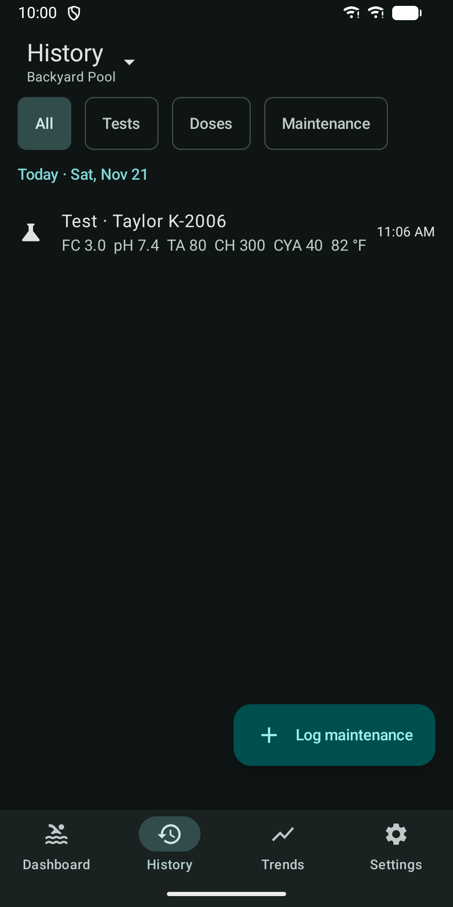
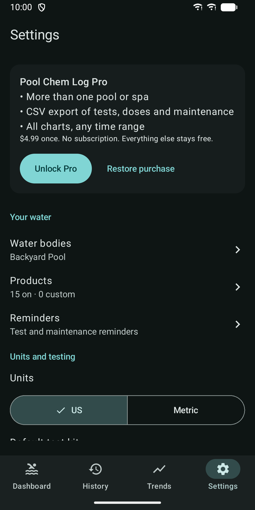
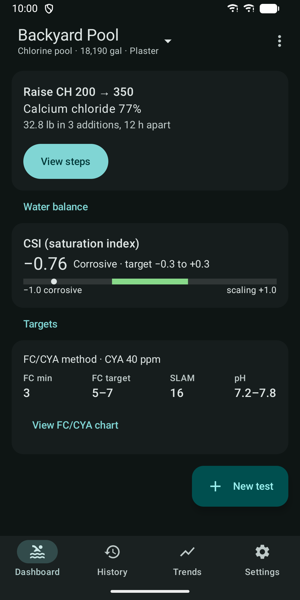

Pool Chem Log: Pruebas de agua
Registra pruebas de agua de piscina y spa y calcula dosis con el método FC/CYA.








Acerca de la app
Pool Chem Log es un registro de pruebas de agua y una calculadora de dosis para piscinas y spas. Introduces tus resultados, ves qué está fuera de rango y obtienes dosis para los productos que realmente usas. Los objetivos siguen el método FC/CYA: el objetivo de cloro libre depende de tu nivel de estabilizador (CYA). La app funciona sin conexión a internet. No hay que crear ninguna cuenta. La app no tiene permiso de internet, así que tus datos se quedan en tu teléfono. PISCINAS Y SPAS Crea una piscina de cloro, una piscina de agua salada (SWG) o un spa con cloro o bromo. Escribe el volumen directamente o usa la calculadora de volumen para formas rectangulares, redondas, ovaladas, de riñón y libres. El tipo de superficie (revoco, grava, vinilo, fibra de vidrio, acrílico) define los objetivos de calcio y saturación. Las unidades de EE. UU. vienen por defecto y el sistema métrico es opcional. ENTRADA DE PRUEBAS SEGÚN TU KIT Elige Taylor K-2006, TF-100 o tiras reactivas. El kit define los pasos, el orden y la precisión. Cuenta gotas para FC, CC, TA, CH y sal, y elige pH, CYA y colores de tira entre los valores del kit. Una prueba parcial es válida. La temperatura del agua se rellena con la de la última prueba. DOSIFICACIÓN La app calcula dosis de cloro libre, pH, alcalinidad total, dureza cálcica, estabilizador, sal y boratos. Incluye productos predefinidos y puedes añadir tus propios productos con cualquier concentración. Los cambios grandes se dividen en varias adiciones con un tiempo de espera entre ellas. Se muestran los efectos secundarios, por ejemplo que el dicloro y el tricloro suben el CYA, el hipoclorito de calcio sube el calcio y el ácido baja la alcalinidad. Las piscinas de agua salada reciben además una sugerencia de cambio de la salida de la célula. Un toque en Mark added registra la dosis y las sugerencias se actualizan. EQUILIBRIO DEL AGUA Y SLAM El índice de saturación de calcita (CSI) tiene en cuenta los boratos y la sal. Un SLAM guiado (Shock Level And Maintain) sigue la prueba de pérdida de cloro durante la noche y muestra los criterios de finalización. HISTORIAL, TENDENCIAS Y RECORDATORIOS Un único historial reúne pruebas, dosis y mantenimiento, como limpieza del filtro, limpieza de la célula de sal, agua añadida y agua vaciada. Las tendencias muestran el cloro libre y el pH de los últimos 30 días. Los recordatorios de pruebas y mantenimiento se programan en tu dispositivo. Un widget de la pantalla de inicio muestra tus últimas lecturas y la siguiente dosis. TUS DATOS Todo se guarda en tu teléfono. La app no tiene anuncios, ni analítica, ni informes de fallos. Es compatible con la copia de seguridad de Android. También puedes exportar e importar una copia en JSON. El archivo es texto plano, sin cifrar, y la app te avisa antes de exportarlo. QUÉ ES GRATIS Y QUÉ REQUIERE PRO Gratis: una piscina o spa, registro completo, dosificación, CSI, SLAM, recordatorios, el widget, copia e importación en JSON y las tendencias de 30 días de cloro libre y pH. Pro es una compra única dentro de la app, no una suscripción. Añade más de una piscina o spa, exportación CSV de pruebas, dosis y mantenimiento, y todos los gráficos con cualquier intervalo de tiempo. Para restaurar una compra en un teléfono nuevo, usa la misma cuenta de Google. SEGURIDAD Las dosis son estimaciones. Repite la prueba antes de añadir más, nunca mezcles productos químicos, usa protección y sigue la etiqueta del producto. Si la etiqueta y la app no coinciden, sigue la etiqueta. Los objetivos se basan en las pautas publicadas por Trouble Free Pool. Pool Chem Log no está afiliada a Trouble Free Pool ni cuenta con su aval.